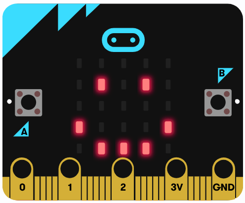
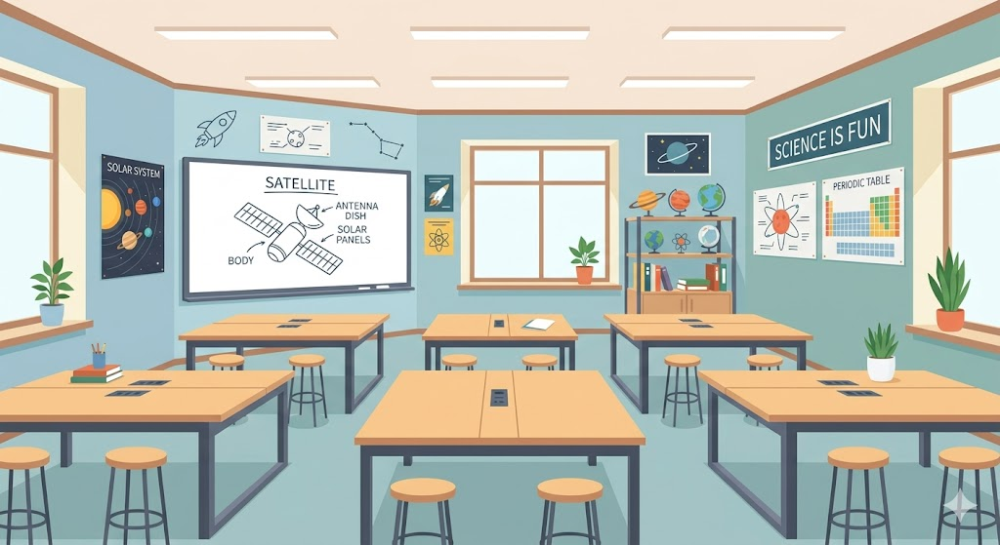
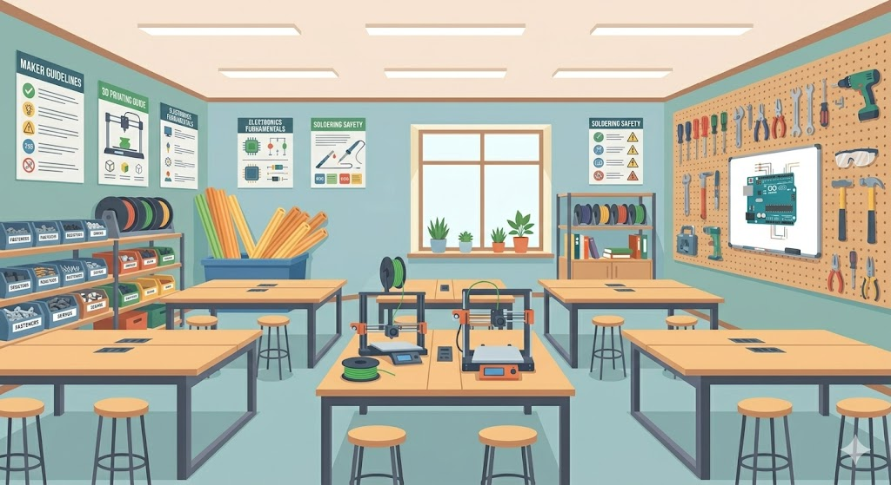
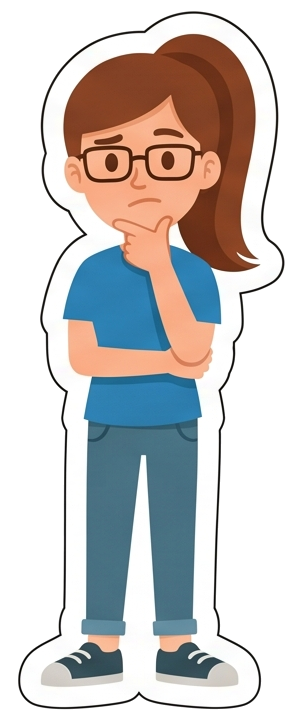
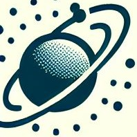
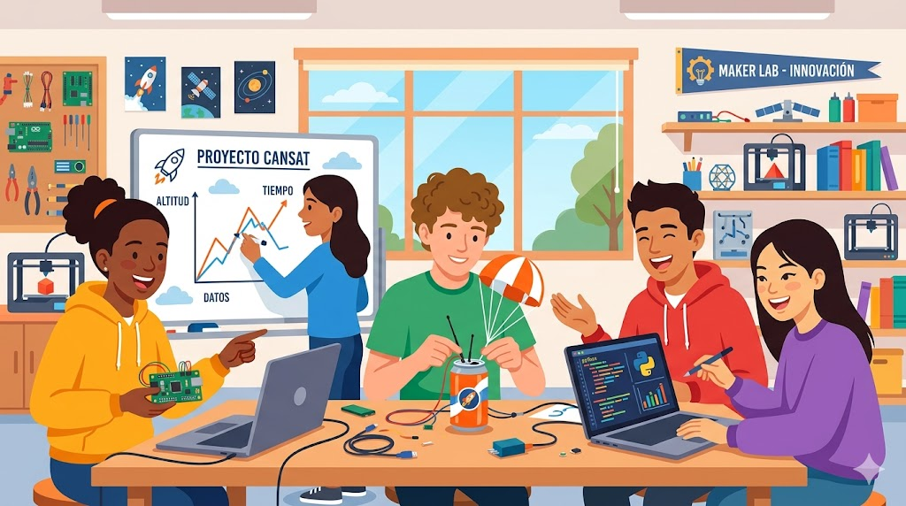

¿Qué vamos a aprender?
En este proyecto nos convertiremos en ingenieros e ingenieras espaciales. Para ello, aprenderemos:
- Qué es un MiniCanSat, cómo funciona y por qué es importante en la exploración espacial.
- Descubriremos cómo usar sensores electrónicos para medir datos del entorno.
- Aprenderemos a programar la placa Micro:bit y a analizar la información obtenida tras el lanzamiento.
- Trabajaremos en equipo para diseñar, construir y probar nuestro propio MiniCanSat, documentando el proceso como lo hacen los científicos e ingenieros reales.
Herramientas para nuestra mochila espacial
A lo largo de nuestra misión MiniCanSat, no solo construiremos un satélite, sino que entrenaremos un montón de habilidades como verdaderos profesionales. Estas son las herramientas que llevaremos en nuestra "mochila espacial":
- Ciencia y Tecnología (Hard Skills): Aprenderemos programación por bloques, entenderemos cómo funcionan la telemetría y la radiofrecuencia, aplicaremos la física del vuelo (resistencia del aire y presión atmosférica) y realizaremos análisis de datos reales usando archivos CSV y gráficas.
- Habilidades para la vida (Soft Skills): Mejoraremos nuestro trabajo en equipo y liderazgo al asumir roles específicos, practicaremos la resolución de problemas bajo presión, tomaremos decisiones en grupo, desarrollaremos el pensamiento crítico y aprenderemos a comunicar nuestros descubrimientos científicos a los demás.
Además, manejaremos muchos términos relacionados con el espacio y la programación. Si necesitamos aclarar alguno de ellos, podemos usar el siguiente glosario.
Aquí tenemos una lista de los principales conceptos que utilizaremos y aprenderemos, divididos en tres categorías para que sea más fácil consultarlos. Pulsar en los títulos para desplegarlos y en las imágenes para ampliarlas.
1. Misión y Espacio
| Término | Definición | |
|---|---|---|
| Astronomía | Ciencia que se encarga del estudio del origen y desarrollo del universo y los distintos cuerpos celestes que orbitan en él. | |
| CanSat / MiniCanSat | Un modelo de satélite real, con todos sus sistemas integrados (batería, sensores y microprocesador), que cabe en el volumen de una lata de refresco. | |
 |
Satélite natural | Cuerpo celeste que orbita alrededor de un planeta. Generalmente, es más pequeño y acompaña al planeta en su órbita. |
 |
Satélite artificial | Objeto creado por el ser humano y colocado en órbita alrededor de un cuerpo celeste para funciones de comunicación, observación o investigación. |
| Misión primaria | Conjunto de objetivos obligatorios para todos los equipos. En nuestro caso: medir temperatura, nivel de luz y aceleración. | |
| Misión secundaria | Objetivo adicional elegido libremente por el equipo para aportar creatividad y valor científico (ej. medir ruido, impacto, etc.). | |
| ODS | (Objetivos de Desarrollo Sostenible): 17 metas globales de la ONU para proteger el planeta y asegurar la prosperidad de todas las personas. | |
| Diario de Misión (MiniPDR) | Documento donde el equipo registra todos los avances, fallos y éxitos de la investigación (basado en el Preliminary Design Review real). |

2. Electrónica y Código
| Término | Definición | |
|---|---|---|
 |
Micro:bit | Pequeña placa programable que actúa como el "corazón" o procesador del MiniCanSat, encargada de leer los sensores y enviar la información. |
| Sensor | Dispositivo electrónico que detecta cambios en el entorno físico, como la temperatura, la luz, el sonido o la presión. | |
| Acelerómetro | Sensor electrónico que mide las fuerzas de aceleración y permite saber si el MiniCanSat está cayendo, girando o si ha impactado. | |
| Variable | Concepto fundamental de programación que actúa como una "caja" para guardar un dato o un estado (ej. verdadero o falso) dentro de nuestro código. | |
| Grupo de Radio | Canal o frecuencia numérica que permite que dos placas Micro:bit se comuniquen entre sí de forma privada, sin interferencias de otros equipos. | |
| Radiofrecuencia | Tecnología que utiliza ondas invisibles para transmitir datos sin cables entre el satélite y la estación de tierra. | |
| Telemetría | El proceso de medir datos de forma remota y enviarlos en tiempo real a una estación base para su seguimiento. | |
| Estación de Tierra | La placa Micro:bit (conectada al ordenador) que recibe los mensajes de radio que envía el satélite desde el aire. | |
| Roles de Misión | Distribución de tareas profesionales (Ingeniería, Datos, Coordinación) para que el equipo trabaje de forma eficiente y organizada. |
3. Lanzamiento y Datos
| Término | Definición | |
|---|---|---|
| Paracaídas | Sistema de descenso controlado, diseñado para frenar la caída del MiniCanSat aprovechando la resistencia del aire. | |
| Presión Atmosférica | Fuerza que ejerce el peso del aire sobre los objetos. Es fundamental para entender el vuelo y la fuerza de nuestro cohete de agua. | |
| Presurización | Proceso mediante el cual se introduce aire a presión en un espacio cerrado (como nuestra botella lanzadora) para acumular energía. | |
| Puerto Serie | Canal de comunicación que permite que la Micro:bit conectada por cable al ordenador muestre los datos que recibe desde el aire. | |
| CSV | (Valores separados por comas): Formato de archivo sencillo que permite guardar los datos de la Micro:bit para abrirlos en una hoja de cálculo. | |
| Análisis de datos | Proceso de examinar los números recogidos durante el vuelo, limpiarlos de errores y convertirlos en gráficas para extraer conclusiones. |
Referencia de las imágenes:
(clic para mostrar)
- Pilares de la creación, NASA (Public domain), Wikimedia
- CanSat, CanSat Extremadura (CC BY-SA)
- Satélite natural, Bricktop (CC BY). Wikimedia.
- Satélite artificial, NASA (Public domain), Wikimedia
- Micro:bit, Captura de pantalla Makecode
- Acelerómetro, CanSat Extremadura (CC BY-SA)
- CSV, CanSat Extremadura (CC BY-SA)
Nuestra misión
En este apartado veremos exactamente cuál será la misión a la que estamos encomendados: el desafío CanSat, junto con una pequeña descripción del objetivo de nuestra investigación y cuáles son los materiales que debemos ir recopilando a lo largo de la misión.
¡Pero no estaremos solos! Nuestros amigos Alex y Sara nos han preparado una pequeña introducción interactiva para darnos la bienvenida oficial al equipo.
Para disfrutarla al máximo, aconsejamos visualizarla a pantalla completa ⛶ y, si no molestáis a nadie a vuestro alrededor, ¡no olvidéis activar el audio 🔊! Así será mucho más divertido.
(El simulador interactivo aparecerá aquí al previsualizar o exportar el REA)
| Tema | Mensaje | Pers. | Pose | Color | Fondo |
|---|---|---|---|---|---|
| Bienvenida | ¡Hola, equipo! Somos Alex y Sara. Estamos emocionadísimos de que os hayáis unido a la Misión MiniCanSat. | Alex | feliz | #e67e22 | clase |
| Misión | ¿Nuestra misión? Construir un satélite real del tamaño de una lata ¡y hacerlo volar! ¿Cómo? Por ejemplo, ¡con un cohete de agua! Ya veréis que es perfectamente posible 😉 |
Sara | explicando | #2980b9 | clase |
| Roles | Pero para que funcione, tenemos que organizarnos. Sara y yo os enseñaremos los roles de ingeniería y ciencia. ¡Nadie trabaja solo en el espacio! | Alex | explicando | #e67e22 | clase |
| Roles | Yo me encargo de la programación y los datos. ¡Es alucinante ver cómo los números se convierten en gráficas que muestran cómo ha sido la caída! | Sara | feliz | #2980b9 | clase |
| Física | ¡Y yo de que el cohete y el paracaídas aguanten! He diseñado una carcasa con un churro de piscina que es súper resistente. | Alex | orgulloso | #e67e22 | clase |
| Taller | ¡Exacto, Alex! Pero recuerda lo que nos dijo la profesora cuando fuimos al taller de construcción... | Sara | pensativa | #2980b9 | taller |
| Seguridad | ¡Uf, sí! Mucho ojo con el cúter. La seguridad es lo primero. ¡Cualquier corte o paso difícil, pedimos ayuda a los profes! | Alex | preocupado | #e67e22 | taller |
| Cohete | ¡Y no olvides el cohete! Solo botellas de refresco con gas. ¡Si no, podrían reventar con la presión! | Sara | explicando | #2980b9 | lanzamiento |
| ODS | Todo este esfuerzo no es solo por diversión. Estamos midiendo datos de temperatura y luz para entender nuestro entorno. | Alex | serio | #e67e22 | lanzamiento |
| ODS 13 | ¡Así es! Con nuestra misión estamos apoyando los Objetivos de Desarrollo Sostenible, como la Acción por el clima (ODS 13). | Sara | decidida | #2980b9 | lanzamiento |
| Ánimo | ¡Equipazo, la cuenta atrás ha comenzado! Pasaremos por fases de programación, construcción y lanzamiento. ¡Vamos a pasarlo genial! | Alex | feliz | #e67e22 | lanzamiento |
| Fin | ¿Estáis listos? Pues seguid leyendo para conocer vuestra primera parada en el itinerario estelar. ¡Despegamos! | Sara | feliz | #2980b9 | lanzamiento |
| clase |  |
| taller |  |
| lanzamiento |  |
| Alex | feliz |  |
| Alex | explicando |  |
| Alex | orgulloso |  |
| Alex | preocupado |  |
| Alex | serio |  |
| Sara | feliz |  |
| Sara | explicando |  |
| Sara | pensativa |  |
| Sara | decidida |  |
Referencia de las imágenes y audio:
(clic para mostrar)
- Alex, Sara y Fondos: Generados mediante IA Nanobanana para Programa CREA (CC0).
- Música: Generada mediante Google Lyria para Programa CREA (CC0).
Pulsar en cada título para desplegar el contenido.

El desafíoEl desafío MiniCanSat consiste en diseñar, construir y lanzar un pequeño satélite del tamaño de una lata de refresco, con el objetivo de simular una misión real de exploración espacial. Nuestro MiniCanSat deberá recoger y transmitir datos durante su ascenso y descenso, lo que nos permitirá analizarlos y extraer conclusiones científicas.
En el siguiente vídeo (1:02) tenemos la presentación del concurso MiniCanSat Extremadura.
¿Qué queremos medir o investigar?
Nuestra misión primaria, que es común a todos los equipos participantes en el desafío, consistirá en medir y registrar la temperatura, el nivel de luz y la aceleración durante el ascenso y descenso del MiniCanSat. Estos datos nos ayudarán a comprender cómo varían estas magnitudes y nos permitirán analizar su comportamiento físico.
Además, podemos definir una misión secundaria, en la que elegiremos otro fenómeno a investigar, como la humedad, la calidad del aire o el impacto acústico.
Producto final
A partir de toda la información recogida en el Diario de Misión MiniCanSat, cada equipo presentará su MiniCanSat, explicará su funcionamiento y mostrará los datos obtenidos en gráficos, describiendo qué aprendieron durante el proceso.
¿Cómo lo haremos?
A continuación tenemos el itinerario de nuestro proyecto, con cada una de las etapas y los productos que iremos creando hasta llegar a nuestra misión final.
- Durante nuestra misión, trabajaremos aspectos relacionados con varias materias (ciencias, matemáticas, tecnología...). En el apartado "contenidos" podemos ver cuáles son.
- También, incluimos una propuesta de plan de trabajo, para ayudarnos a organizarnos lo mejor posible. ¡Va a ser un reto genial!
Configuración del mapa interactivo (Esta tabla se ocultará automáticamente):
| UI | Comenzar Exploración | Entendido | Mapa Orbital de la Misión |
| 1 | Nos organizamos | 👥 | Conoceremos qué es un MiniCanSat y cómo funciona, estableceremos grupos, distribuiremos roles, aprenderemos a usar el Diario y conoceremos cómo será la evaluación. |
| 2 | Programamos | 💻 | Exploraremos la placa Micro:bit, definiremos nuestra misión secundaria y programaremos los sensores (temperatura, luz, aceleración) para la recopilación de datos y su transmisión a tierra. |
| 3 | Construimos | 🛠️ | Diseñaremos y ensamblaremos nuestro MiniCanSat: crearemos su carcasa protectora, construiremos un paracaídas resistente y montaremos la placa con su sistema de alimentación. |
| 4 | Sistema de lanzamiento | 🚀 | Construiremos un cohete de agua seguro con su lanzadera, estableciendo los protocolos de seguridad necesarios para un despegue espectacular. |
| 5 | Lanzamiento y Análisis | 📈 | Realizaremos el lanzamiento superando el check-list, recogeremos la telemetría, limpiaremos el archivo CSV y analizaremos los datos creando gráficas como verdaderos científicos. |
| 6 | Conclusiones finales | 🏆 | Recogeremos todo lo aprendido en nuestro informe final, comunicaremos nuestros descubrimientos al resto de la clase y... ¡desbloquearemos nuestras insignias ODS! |
Itinerario
- Nos organizamos. Conoceremos qué es un MiniCanSat y cómo funciona, establecemos grupos, distribuimos roles, aprendemos a usar el cuaderno de trabajo (MiniPDR), conocemos los productos finales a realizar y cómo será la evaluación.
- Programamos. Exploraremos la placa Micro:bit, sus sensores integrados y sus sistemas de comunicación. Definiremos nuestra misión y programaremos los sensores para la recopilación de datos y su transmisión a tierra.
- Construimos el MiniCanSat. Diseñaremos y ensamblaremos nuestro MiniCanSat, creando su carcasa, construyendo el paracaídas, montando la placa Micro:bit con su sistema de alimentación y asegurando la correcta integración de todos los componentes.
- Preparamos el sistema de lanzamiento. Diseñaremos y construiremos un sistema seguro de lanzamiento para nuestro MiniCanSat, asegurándonos de que cumple con los requisitos para un despliegue adecuado.
- Lanzamos, recogemos datos y analizamos. Realizaremos el lanzamiento de nuestro MiniCanSat, observaremos su descenso y recopilaremos los datos transmitidos por los sensores, los compararemos con nuestras hipótesis iniciales y reflexionaremos sobre el proceso, nuestro aprendizaje y las posibles mejoras.
- ¡Misión cumplida! Nuestras conclusiones finales. Recogemos todo lo aprendido y completamos nuestro informe final MiniPDR, donde documentamos los resultados, dificultades y mejoras de nuestra misión. Finalmente, compartimos nuestras conclusiones con el resto de la clase como verdaderos equipos científicos.
Contenidos
Este proyecto nos permitirá trabajar de manera interdisciplinar diferentes contenidos:
Ciencias de la Naturaleza
- Identificación de los factores meteorológicos y su medición.
- Conceptos básicos sobre la atmósfera terrestre y la variación de la presión con la altitud.
- Funcionamiento de los sensores y su aplicación en la recogida de datos científicos.
Matemáticas
- Registro y análisis de datos (tablas, gráficos y patrones).
- Relación entre variables (por ejemplo, cómo varía la temperatura con la altitud).
Tecnología
- Uso de Micro:bit para la recopilación de datos.
- Programación básica con bloques o código para procesar información.
Trabajo en equipo y comunicación
- Organización y distribución de tareas dentro del equipo.
- Exposición de conclusiones utilizando el método científico.
Plan de trabajo
A continuación describimos algunas opciones de trabajo:
Agrupamientos
A lo largo de todo el proceso trabajaremos de varias maneras:
- Individualmente: para actividades de reflexión, registro en el Diario de Misión MiniCanSat y análisis de datos.
- Pequeños grupos: para el diseño, construcción y programación del MiniCanSat, así como el desarrollo del sistema de lanzamiento.
- Gran grupo: para puesta en común de ideas, toma de decisiones y análisis colectivo de los resultados.
Esta organización es una propuesta flexible. Nuestro profesor/a adaptará esta propuesta a las características de nuestra clase y lo particularizará para enfocar más personalmente lo que vamos a aprender.
Diario de Misión MiniCanSat
Para documentar nuestro trabajo y aprendizaje, utilizaremos un Diario de Misión MiniCanSat, que podrá ser en formato digital o en papel.
Se crearán:
- Diario individual de misión MiniCanSat: aquí registraremos nuestros avances, descubrimientos y reflexiones sobre cada etapa del proyecto. Será un diario individual.
Completar este diario nos ayudará a ser conscientes de nuestro progreso, superar obstáculos y compartir información clave con el equipo. Nos tomaremos unos minutos al final de cada sesión para reflexionar sobre estos puntos.
📖 Contenidos del Diario de Aprendizaje (clic para mostrar)
- 🧠 Reflexión personal
- ¿Qué tareas he realizado hoy?
- ¿Qué dificultades he encontrado y cómo las he resuelto?
- 🌟 Aprendizaje diario
- ¿Qué conceptos nuevos he aprendido?
- ¿Qué ideas o habilidades he mejorado?
- 🤝 Colaboración en el equipo
- ¿Cómo ha sido mi comunicación y trabajo con el equipo?
- ¿Qué aspectos podría mejorar en la colaboración?
- 📝 Otra información
- Anotaciones adicionales sobre el proceso, ideas o problemas.
- Diario de equipo: ¿Qué información de mi diario individual es útil para el grupo?
- 🧠 Reflexión personal
-
Diario de Misión MiniCanSat de equipo: este documento compartido recogerá la información más relevante de los diarios individuales. En él, cada equipo plasmará el diseño, programación y resultados obtenidos en la misión, permitiendo una visión conjunta del proyecto.
Lo iremos rellenando a medida que vayamos terminando cada una de las fases del proyecto. Nos servirá para organizar nuestro trabajo, aprender de los errores y reflexionar sobre todo lo que hemos descubierto.
¡Vamos a convertirnos en verdaderos ingenieros espaciales!🚀 Contenidos del Diario de Misión (Equipo) (clic para mostrar)
- 👥 Presentación del Equipo
- Nombre de nuestro equipo y participantes.
- Nombre de nuestra profesora o profesor.
- 🎯 Nuestra Misión
- ¿Cuál es el propósito de nuestro MiniCanSat?
- ¿Qué queremos medir o investigar y por qué es importante?
- 💻 Programación
- Instrucciones, bloques y comandos principales utilizados.
- ¿Funciona correctamente? Cambios y ajustes realizados.
- 🛠️ Diseño y construcción del MiniCanSat
- Componentes (Micro:bit, sensores, carcasa, paracaídas...).
- Dibujo o esquema del prototipo y resolución de dificultades.
- 🚀 Sistema de lanzamiento
- Materiales, funcionamiento y esquema del sistema.
- Seguridad: Medidas adoptadas para garantizar el éxito.
- 📈 Lanzamiento y recogida de datos
- Fecha, lugar y observaciones durante el vuelo.
- Datos recopilados (temperatura, altura, tiempo...).
- 🧐 Análisis y reflexión final
- ¿Coinciden los datos con las expectativas?
- Aprendizajes obtenidos y propuestas de mejora.
- 👥 Presentación del Equipo
Productos
A lo largo del proyecto, generaremos distintos productos que reflejarán nuestro trabajo:- Diario individual de misión MiniCanSat
- Diario de misión MiniCanSat de equipo
- Programación de las Micro:bit (sensores y comunicación)
- MiniCanSat funcional (carcasa y ensamblaje de placa y sistema de alimentación)
- Paracaídas.
- Sistema de lanzamiento.
- Presentación final con nuestras conclusiones.
Evaluación
En la evaluación del proyecto participaremos tanto el alumnado como el profesorado.
- Autoevaluación: Reflexionaremos sobre nuestro propio aprendizaje y desempeño en el equipo.
- Coevaluación: Valoraremos el trabajo de nuestros compañeros y el funcionamiento del equipo.
- Evaluación docente: Se utilizarán rúbricas y documentos de seguimiento para evaluar:
- El Diario de Misión MiniCanSat y el trabajo de equipo.
- La construcción y programación del MiniCanSat.
- La calidad del análisis de datos.
- La presentación final del proyecto.
Nuestro objetivo no solo es construir un MiniCanSat, sino también aprender a trabajar en equipo, resolver problemas y desarrollar nuestra creatividad científica.
**Actividad Previa. Creamos los equipos
Para llevar a cabo nuestra misión MiniCanSat, nos organizaremos en equipos de cuatro o cinco personas. Cada miembro del equipo asumirá un rol específico con funciones definidas, pero todos participaremos en las distintas tareas del proyecto.
Cada miembro del equipo es vital para el éxito de la misión CANSAT. Vamos a desplegar los diferentes roles y funciones para descubrir sus responsabilidades.
👥 Roles y funciones de los equipos (clic para mostrar)
- 👔 Coordinador/a de misión
- Organiza el trabajo del equipo.
- Supervisa que cada miembro cumpla con su papel.
- Gestiona el tiempo y la planificación de tareas.
- Modera y resuelve conflictos dentro del equipo.
- Se comunica con el docente y otros equipos.
- 🛠️ Ingeniero/a de sistemas
- Se encarga del diseño y ensamblaje del MiniCanSat.
- Garantiza que todos los componentes estén integrados.
- Verifica el material para la carcasa y el paracaídas.
- Supervisa el ensamblaje final y la integración.
- 📡 Especialista en telecomunicaciones
- Configura y prueba la transmisión de datos.
- Verifica que los datos se reciben correctamente en tierra.
- Se encarga de programar la Micro:bit y comunicaciones.
- Realiza pruebas previas de telemetría.
- 📊 Científico/a de datos
- Analiza los datos recogidos durante la misión.
- Interpreta resultados y los compara con hipótesis.
- Asegura que los datos se documenten correctamente.
- Colabora en la redacción del informe de análisis.
- ✍️ Gestor/a de información
- Redacta informes y prepara la presentación final.
- Organiza la información de manera clara y atractiva.
- Registra en el Diario de Misión de equipo la información relevante.
- Presenta las conclusiones y aprendizajes en la exposición.

Una vez adjudicados los roles, seguiremos estos pasos:
- Elegimos un nombre para nuestro equipo que nos represente y refleje nuestro espíritu de exploradores espaciales.
- El/la coordinador/a de misión creará una carpeta en la nube (si trabajamos en formato digital), le pondrá el nombre del equipo y la compartirá con los demás miembros y con el docente. Si optamos por el formato físico, organizaremos un cuaderno de trabajo o carpeta en papel donde archivaremos toda la documentación relevante del equipo.
- El equipo completará el documento Registro de roles y funciones de los miembros del equipo MiniCaSat (descarga en formato editable y en pdf).
Este proceso nos ayudará a organizarnos mejor, distribuir responsabilidades y garantizar que cada aspecto de la misión MiniCanSat se lleve a cabo de manera eficiente.
**Profesiones del espacio
Un satélite no se construye solo. Detrás de cada lanzamiento hay equipos de personas muy preparadas trabajando juntas. Durante nuestra misión MiniCanSat, no solo aprenderemos ciencia, sino que experimentaremos cómo es trabajar en profesiones STEM (Ciencia, Tecnología, Ingeniería y Matemáticas).
Con este trabajo, impulsaremos el ODS 9: Industria, innovación e infraestructura, descubriendo profesiones clave como:
- Ingeniería Aeroespacial y de Sistemas: Diseñan la estructura, el paracaídas y aseguran que todas las piezas encajen y resistan el vuelo.
- Ingeniería de Telecomunicaciones: Aseguran que la señal de radio viaje correctamente desde el cielo hasta nuestros ordenadores sin perderse.
- Ciencia de Datos: Analizan todos los números (temperatura, luz, aceleración) para convertirlos en gráficas e información útil.
- Gestión de Proyectos: Coordinan al equipo, vigilan los tiempos y comunican los descubrimientos al mundo.
A lo largo del proyecto, adoptaremos estos roles. ¡Quizás descubramos nuestra futura profesión!
**Check-list de Misión: ¿Estamos listos?
Completa la lista de cotejo marcando las casillas al realizar las actividades correspondientes.
**Dossier Imprimible de la Misión 🖨️
Por si en algún momento necesitamos trabajar en papel, adaptar algunos materiales, o no tenemos conexión a Internet en el aula, aquí tenemos todo el contenido de nuestra aventura espacial estructurado en un formato listo para imprimir.
Abrir Dossier de Teoría Abrir Cuaderno de Actividades
(Dentro de cada archivo, podemos ir a Archivo > Descargar si necesitamos guardarlo en el ordenador).